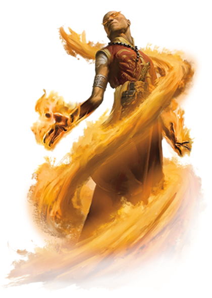

Classes > Mages > Sorcerer
Also known as Channeler or Hedge Mage. A natural bender of the arcane weave that permeates the world whose talent comes from birthright, divine blessing or unconventional training.
Contrasted with other mages who must slowly and methodically induce themselves into the world of the supernatural, Sorcerers are thrust into it by virtue of an external force turning them into a living mana battery. They are much less concerned with the study or exact measures of the art, and instead control the weave of magic through natural instinct, likening it to an animal entering a thoughtless hunting trance. Unlike wizardry, of which the rules and balances are thoroughly studied and documented, sorcery treads an uncharted territory in which there is no guarantee of success or safety. Powerful sorcerers are ones who have survived the repeated gamble of dealing with the weave, and know how to balance ambition with restraint.
Sorcerers do not carry spellbooks, instead memorizing all their known spells at once. They also do not use spell slots, unlike other mages. They tap into a powerful metaphysical resource called Mana.
Level 1: Sorcerers are expected to hail from a certain "tradition", which is somewhat similar to a Wizard's specialization. Depending on the source of their power, they may change their title and gain bonuses:
- Elementalist: Can choose one element which casting now costs mana one Tier lower. At level 5, 10 and 15, they may choose another, or they may pass on the choice to gain the ability to polymorph to a lesser elemental of that element daily, or upgrade any existing elemental transformation to greater.
- Conjurer: Can control 1 more summon per 5 levels.
- Psionicist: Can innately telepathically communicate with any sentient being they can see. Any attempts at subversion are still subject to the required CHA rolls. They may also cast Enchantment and Illusion spells without verbal component, and have resistance to being charmed or frightened.
- Lunar Mage: Gains the same moon phase bonuses as the Lunarian race.
- Blood Mage: Can use the Control Water cantrip on blood, drink it to restore their mana (same liquid rate as mana potions), and have the option to polymorph self into a swarm of bats at 1 bat per level. They have disadvantage on everything if they touch sunlight, snow, water, or can smell garlic.
- Dragon Mage: Can choose one color of Dragon (see Dragons in the bestiary) and add their CHA modifier to the roll of any spell associated with that color. They can also sprout wings and fly a combined total of 1 mile per day at level 10.
- Paradox Mage: They can manipulate the paradox counter of reality to force any roll (attack, skill, etc.) to succeed, at the cost of plaguing themselves with imbalance until they return the counter to 0 by manipulating it again to guarantee the success of harmful rolls of equal magnitude (failure of a non-repeatable roll, attack received). They must roll a d6 every 10/5/2/1 round(s) depending on how far skewed the counter is (They can no longer pull the weave if they're plagued every round) for a random effect:
1- Teleport randomly.
2- Cast Fireball centered on a random target.
3- Go invisible and be silenced for one round.
4- Polymorph self into a sheep for one round.
5- Gain a free extra action this round.
6: d20 into a random race until "remove curse" is cast or their next level-up.
Level 4: Sorcerers may equally split the damage of targeted damage-dealing spells among any number of chosen targets.
Level 8: Sorcerers may substitute any spell reagent for precious stones of equal cost.
Level 12: Sorcerers rolling for Use Magical Device can reduce the DC to 5 or 10 (whichever higher is still lower than the original DC). They may also use a target within range as the proxy origin for the purpose of calculating distance to reach a second target.
Level 16: Sorcerers may empower a spellcast with any dice roll to deal its maximum potential value, up to once per day per 5 levels.
|
Level |
Mana Pool |
Bonuses |
Level |
Mana Pool |
Bonuses |
|
1 |
1+(INT/2) |
Mana, Sorcerer Tradition |
11 |
11+(INT/2) |
- |
|
2 |
2+(INT/2) |
- |
12 |
12+(INT/2) |
Feat, Devices, Proxy |
|
3 |
3+(INT/2) |
- |
13 |
13+(INT/2) |
- |
|
4 |
4+(INT/2) |
Feat, Split Damage |
14 |
14+(INT/2) |
- |
|
5 |
5+(INT/2) |
Control Magic, Counterspell |
15 |
15+(INT/2) |
Absorb Magic II |
|
6 |
6+(INT/2) |
- |
16 |
16+(INT/2) |
Feat, Empower Spellcast |
|
7 |
7+(INT/2) |
- |
17 |
17+(INT/2) |
- |
|
8 |
8+(INT/2) |
Feat, Substitute Reagents |
18 |
18+(INT/2) |
- |
|
9 |
9+(INT/2) |
- |
19 |
19+(INT/2) |
Feat |
|
10 |
10+(INT/2) |
Absorb Magic |
20 |
20+(INT/2) |
Absorb Magic III |